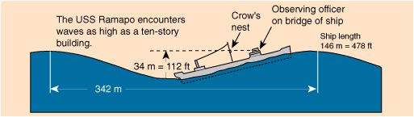

Highest Ocean WavesAccording to Ned Mayo (see Ref), the highest reliably measured ocean waves were reported by officers of the Navy oiler USS Ramapo in the North Pacific on February 7, 1933. By triangulation on the ship's superstructure, they measured a wave height of 34 meters (112 feet) peak to trough. The period of the wave was 14.8 seconds and its wavelength was calculated to be 342 meters. Using the wave velocity expression for this wavelength in the deep water limit, the wave speed is calculated to be 23 m/s. Mayo calculates the power of one meter length of such a wavefront to be 17,000 kilowatts! The crew of the Ramapo measured these waves and lived to tell about it because their relatively short ship(146 m =478 ft) rode these very long wavelength ocean mountains without severe stresses on the craft. Mayo expresses concern about the safety of some modern giant ships (>250 meter length) in such seas.
|
Index Ocean Waves-Their Energy and Power, Ned Mayo, Physics Teacher 35, September 1997 p352 | ||
|
Go Back |
The USS Ramapo in Mountainous WavesIn February, 1933, the USS Ramapo, a 146 meter (478 ft) Navy oiler found itself in an extraordinary storm on its way from Manila to San Diego. The storm lasted 7 days and stretched from the coast of Asia to New York, producing strong winds over thousands of miles of unobstructed ocean. Driven from behind by winds on the order of 60 knots, the crew had time to carefully observe the nearly sinusoidal mountainous waves. An officer on the deck observed the crest of the wave approaching from behind just over the level of the crow's nest while the stern of the ship was at the trough of the wave. Subsequent scaling yielded the height of 34 meters for the wave.  |
Index Ocean Waves-Their Energy and Power, Ned Mayo, Physics Teacher 35, September 1997 p352 Waves and Beaches, Willard Bascom, Doubleday, 1964 p58-59. | ||
|
Go Back |
Velocity of Idealized Ocean WavesThe velocity of idealized traveling waves on the ocean is wavelength dependent and for shallow enough depths, it also depends upon the depth of the water. The wave speed is In deep water, the hyperbolic tangent in the expression approaches 1, so the first term in the square root determines the deep water speed. The limits on the tanh function are so the limiting cases for the velocity expression are While this wave speed calculation may be a good approximation of the experimental wave speed, it cannot be depended upon as a precise description of the speed. It presumes an ideal fluid, level bottom, idealized waveshape, etc. It is also the speed of a progressive wave with respect to the liquid and therefore does not include any current speed of the water. In technical literature, this speed with respect to the liquid is called the "celerity" of the wave.
|
Index Ocean Waves-Their Energy and Power, Ned Mayo, Physics Teacher 35, September 1997 p352 Waves and Beaches, Willard Bascom, Doubleday, 1964 p58-59. | |||
|
Go Back |